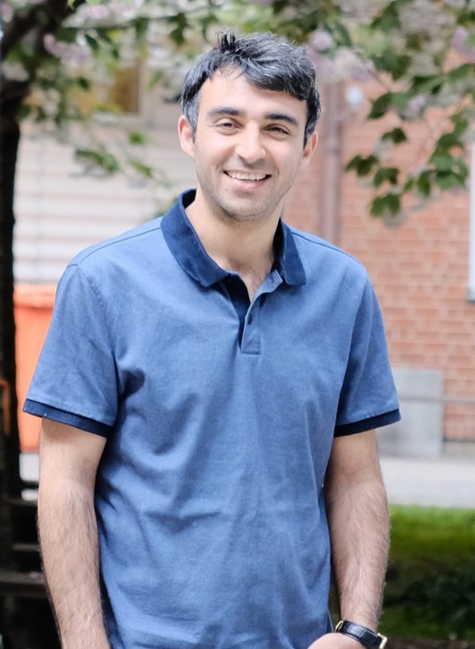

I'm on the academic job market!
I'm applying for tenure-track faculty positions for the 2026–2027 academic year. My work spans two areas — security of LLM agents and AI systems, and quantum networking & distributed quantum computing — and I'm excited to join a department in either (or both). If this overlaps with your department's interests, I'd love to connect!
I am a Postdoctoral Researcher at Chalmers University of Technology, Gothenburg, Sweden, supported by the Wallenberg AI, Autonomous Systems and Software Program (WASP). I build networked and distributed systems that remain secure and reliable under uncertainty and adversaries. My research follows two complementary threads:
Research interests: LLM agents, AI security & privacy, AI for networked systems, network security, quantum networking, distributed quantum computing, and quantum machine learning.
I received my Ph.D. in Computer Science from the University of Massachusetts Amherst, where I am honored to have been advised by Professor Don Towsley. My dissertation studied resource allocation and scheduling under probabilistic constraints in networked and distributed systems. My work has appeared at IEEE S&P, USENIX NSDI, IEEE INFOCOM, IEEE Network, and PAM, and was recognized with a Best Paper Award at IEEE QCE 2023.
Saeefa Rubaiyet Nowmi, Jesus Lopez, Md Mahmudul Alam Imon, Shahrooz Pouryousef, Mohammad Saidur Rahman
➙ Critical Evaluation of Quantum Machine Learning for Adversarial Robustness
IEEE Symposium on Security and Privacy (S&P / Oakland) · 2026 [arXiv]
S. Pouryousef, J. Lopez, S. R. Nowmi, M. M. Kamol, M. Hossain, M. Tran, M. S. Rahman
➙ A Large-Scale Benchmark and Risk Assessment of Traffic Analysis Attacks on Cloud LLM Services
Preprint · arXiv:2609.31877 · 2026 [arXiv] [PDF]
Shahrooz Pouryousef et al.
➙ Do LLMs Understand Collaborative Signals? Diagnosis and Repair
ACM CHIIR · 2026 [arXiv]
S. Pouryousef, L. Gao, A. Venkataramani
➙ Towards Logically Centralized Interdomain Routing
USENIX NSDI 2020 [USENIX] [PDF]
S. Pouryousef et al.
➙ A Quantum Overlay Network for Efficient Entanglement Distribution
IEEE INFOCOM 2023 [arXiv]
Leonardo Bacciottini, Matheus Guedes De Andrade, Shahrooz Pouryousef, Emily A. Van Milligen, Aparimit Chandra, Nitish K. Panigrahy, Nageswara S. V. Rao, Gayane Vardoyan, Don Towsley
➙ Leveraging Internet Principles to Build a Quantum Network
IEEE Network · 2025 [DOI]
Mahdi Chehimi, Shahrooz Pouryousef, Nitish K. Panigrahy, Don Towsley, Walid Saad
➙ Scaling Limits of Quantum Repeater Networks
IEEE QCE 2023 [arXiv] [DOI]
★ Best Paper Award, IEEE QCE 2023
I. Chanis, S. Pouryousef, M. Tran
➙ Adaptive Evasion of Tree-Based BGP Path Hijacking Detectors
ACM CCS · 2026 (Poster)
Shahrooz Pouryousef, Hassan Shapourian, Alireza Shabani, Don Towsley
➙ Quantum Network Planning for Utility Maximization
QuNet Workshop at ACM SIGCOMM · 2023 [DOI]
Shahrooz Pouryousef, Hassan Shapourian, Alireza Shabani, Ramana Kompella, Don Towsley
➙ Resource Placement for Rate and Fidelity Maximization in Quantum Networks
IEEE Transactions on Quantum Engineering · 2024 [arXiv] [DOI]
Shahrooz Pouryousef, Nitish K. Panigrahy, Monimoy Deb Purkayastha, Sabyasachi Mukhopadhyay, Gert Grammel, Domenico Di Mola, Don Towsley
➙ Resource Management in Quantum Virtual Private Networks
IEEE QCE 2023 [arXiv]
Shahrooz Pouryousef, Eneet Kaur, Hassan Shapourian, Don Towsley, Ramana Kompella, Reza Nejabati
➙ Benchmarking Quantum Data Center Architectures: A Performance and Scalability Perspective
Preprint · arXiv:2601.01353 · 2026 [arXiv]
Shahrooz Pouryousef, Reza Nejabati, Don Towsley, Ramana Kompella, Eneet Kaur
➙ Network-Aware Scheduling for Remote Gate Execution in Quantum Data Centers
Preprint · arXiv:2504.20176 · 2025 [arXiv]
Shahrooz Pouryousef, Hassan Shapourian, Don Towsley
➙ Analysis of Asynchronous Protocols for Entanglement Distribution in Quantum Networks
Preprint · arXiv:2405.02406 · 2024 [arXiv]
S. Pouryousef, L. Gao, D. Towsley
➙ Robust Path Selection in Software-defined WANs using Deep Reinforcement Learning
Preprint · arXiv:2212.11155 · 2022 [arXiv]
S. Pouryousef, M. D. Dar, S. Ahmad, P. Gill, R. Nithyanand
➙ Extortion or Expansion? Costs and Consequences of ICANN's gTLD Experiments
PAM 2020 [DOI]
My teaching experience includes serving as instructor for undergraduate computing courses and as a teaching assistant for networking and security courses.
Course Staff
Instructor
Teaching Assistant
Teaching Assistant
I have contributed to academic service through workshop organization, program committees, student representation, community-building, applicant mentoring, and peer review.